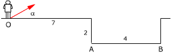

Un avión vuela en dirección
30º bajo la horizontal. Cuando está a una altura de 3500 m
suelta una bomba que alcanza 3868 m. Determina la velocidad del avión
en el momento de soltar la bomba |
Desde lo alto de una torre se lanza
horizontalmente una piedra y llega al suelo con una velocidad 44 m/s en
dirección 63º bajo la horizontal. Encontrar la altura de la
torre y la velocidad inicial de la piedra |
Una escopeta
de resorte lanza una pelota con ángulo de 45º alcanzando 9.6
m. Determina la altura máxima que alcanzó la pelota |
Determina el ángulo de tiro para
que un proyectil, que sale a 200 m/s, alcance 3000 m |
Un aro está suspendido verticalmente
con su centro a 4 m del suelo. Desde el suelo, a 3 m del pie de la vertical
del aro, se quiere lanzar una pelota de forma que atraviese el aro pasando
horizontalmente por su centro. Determina la velocidad y ángulo
de lanzamiento |
 |
Desde el punto O se lanza
una pelota en dirección 30º sobre la horizontal. Determina
la mínima y máxima velocidad de lanzamiento para que
la pelota caiga en la zona AB |
|
Dos aviones vuelan horizontalmente. La
velocidad de uno de ellos es de 300 m/s y su altura es cuatro veces mayor
que la del otro. Cuando están en la misma vertical sueltan simultáneamente
una bomba cada uno y ambas llegan al mismo punto en el suelo. Averigua
la velocidad del avión que volaba más bajo |
Determina el ángulo de tiro para
que un proyectil, que sale a 200 m/s desde una altura de 500 m, alcance
1000 m |